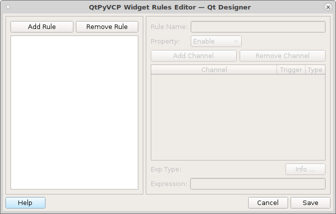
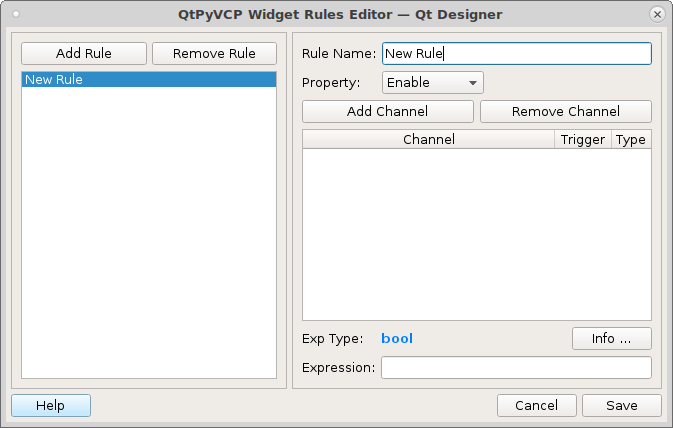
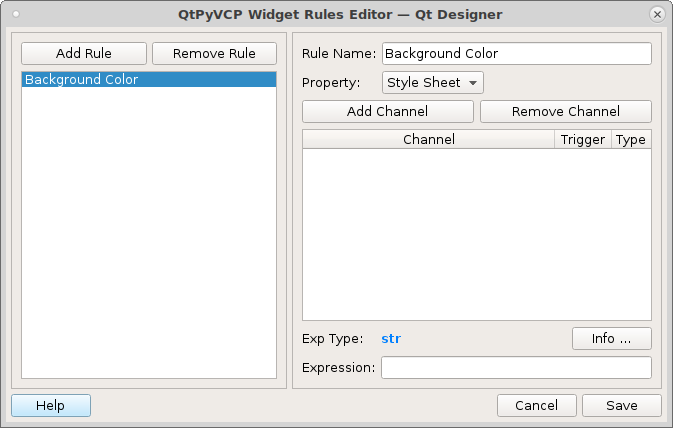
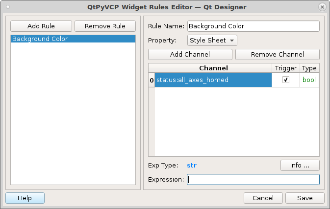
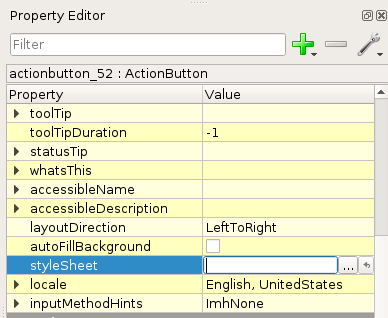
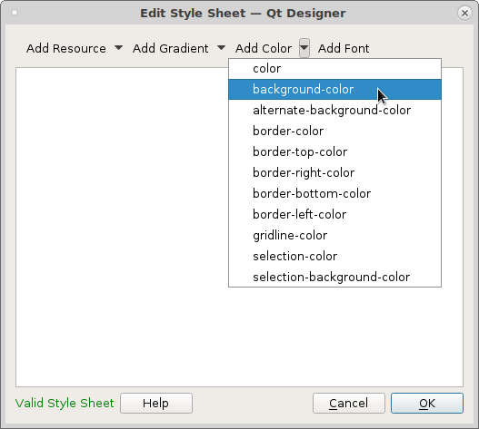
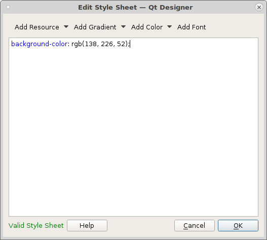

Widget Rules
One of the most powerful features of QtPyVCP are the Widget Rules. Widget Rules are a flexible way of making widgets respond to changes in external data.
Rules can be used for things as simple as making a label display the current machine position, or as complicated as hiding, showing and rearranging widgets and layouts.
Each widget can have multiple rules applied to it, and each rule can make use of data from multiple sources.
A rule is used to define some behaviour of the widget. Each rule consists of the follwing components.
Rule Name: Used to tell rules apart and is optional.
Property: The widget property the rule works on like text, enable, style sheet etc.
Channel: The status or setting to monitor.
Exp Type: The type of variable the expression requires.
Expression: What to do when the Channel changes.
Start building a rule by double clicking on the QtPyVCP widget and this screen pops up.
The first thing is to left click on Add Rule to get a new rule started. Now you can see that everything is enabled for that new rule.
Now give the rule a name to remind you what that rule does.
Select the Property that the rule will be applied to, in this case we are changing the background color of the widget depending on the condition of the channel. The Style Sheet is where you set colors and fonts etc.
Next we need to select a channel for our rule. Most of the channels are status channels and a list of them is see Status Items Start by left clicking on Add Channel and you will see a new channel appears.
From left to right each channel has
Channel Number: The start at 0 and you reference a channel by ch[0]
Channel: The channel selected to monitor
Trigger: You can select the channel to trigger the Expression when it changes
- Type: This is the variable type of the channel
str is string of text
int is a whole number integer
float is a floating point number with a decimal point
bool is True or False
long is a bigger int
Channels are grouped by function
Notifications: Error channel notifications
Offset Table: Current offsets
Position: Current positions
Settings: Machine settings
Status: All the status items
To select a channel start typing in the first letter and a list will show up and you can select the one you need. In this case I’ve selected status:all_axes_homed and after left clicking into the Expression box you can see that the type is bool which is True or False. Note that python True and False uses a capitol first letter.
The first thing you need to notice is the variable type of the channel is a bool (True/False) and the variable type of the expression is str (string of text). So when you are making the expression you must end up with a variable type of str. If the types match often you can just have ch[0] as the expression.
I’m going to show a little trick here, I’ll start off by putting an expression in as a place holder so I can save the rule and use the built in stylesheet to get my color syntax.
The expression reads put what is in the first set of quotes into the widget stylesheet if channel 0 is True else put what is in the last set of quotes into the widget stylesheet.
'' if ch[0] else ''
Make sure your wiget is selected then left click on the ellipse (three dots) in the stylesheet box located int the Property Editor.
This will bring up the color selector, left click on the down arrow next to the color selector and select background-color.
Now pick a color and left click on Select and the stylesheet code can be cut and pasted into the rule. Make sure you delete the color code from the stylesheet.
I picked green so now my Expression is this which reads put the code to set the background color of green into my widget if channel 0 is true and do nothing if it is not true.
'background-color: rgb(138, 226, 52);' if ch[0] else ''
If I wanted a color to show when the channel is false I would put it into the last set of quotes.
Expressions
Any valid Python expression will work in the Expression box.
Decisions can use if/else type of python expressions. Syntax for rules is do this if channel is true else to that. You could use that to set a button label text or a status label.
'On' if ch[0] else 'Off'
Some examples:
To change a number variable from channel 0 to a string we use the python str() function.
str(ch[0])
To compare if a number is not 0 and change that to a bool This reads if channel 0 is not equal to 0 then apply True else apply False.
True if ch[0] != 0 else False